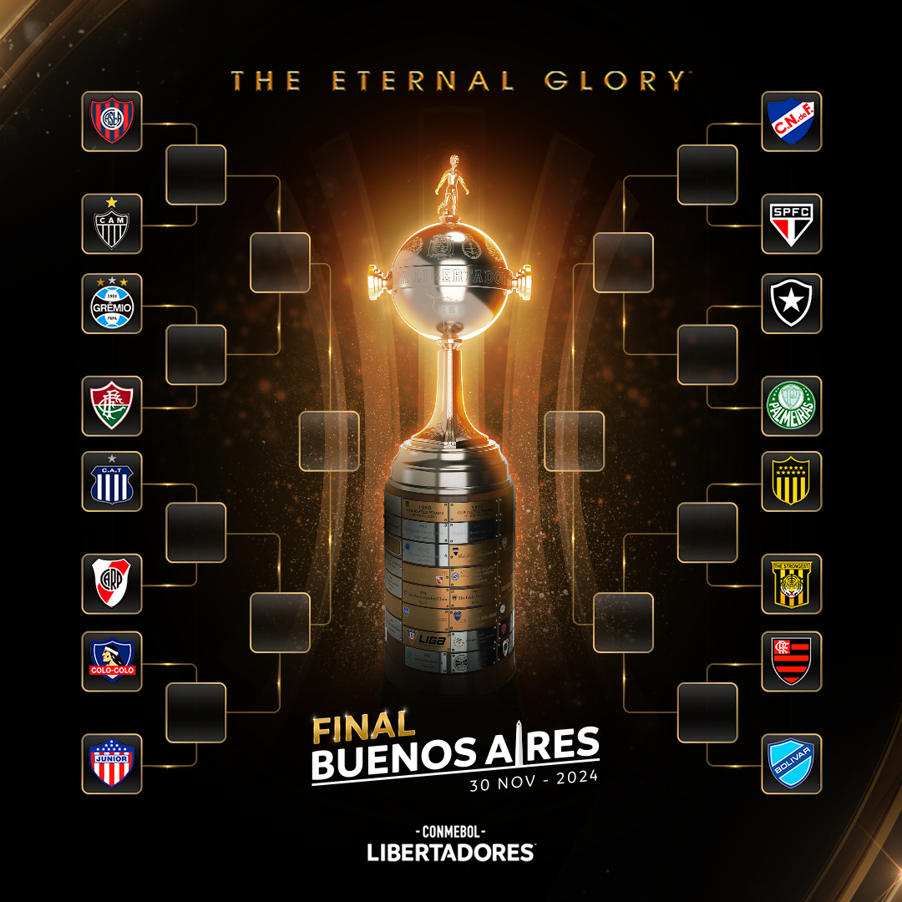
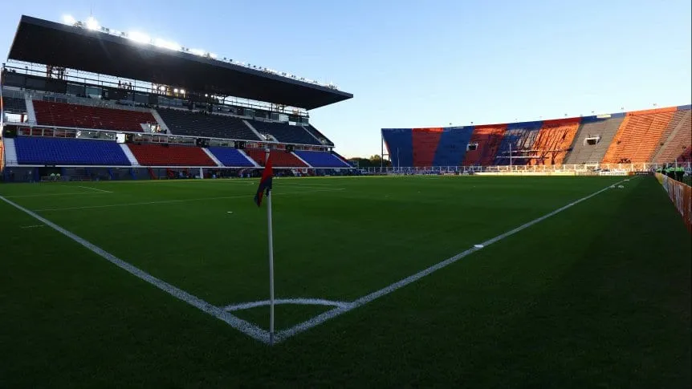
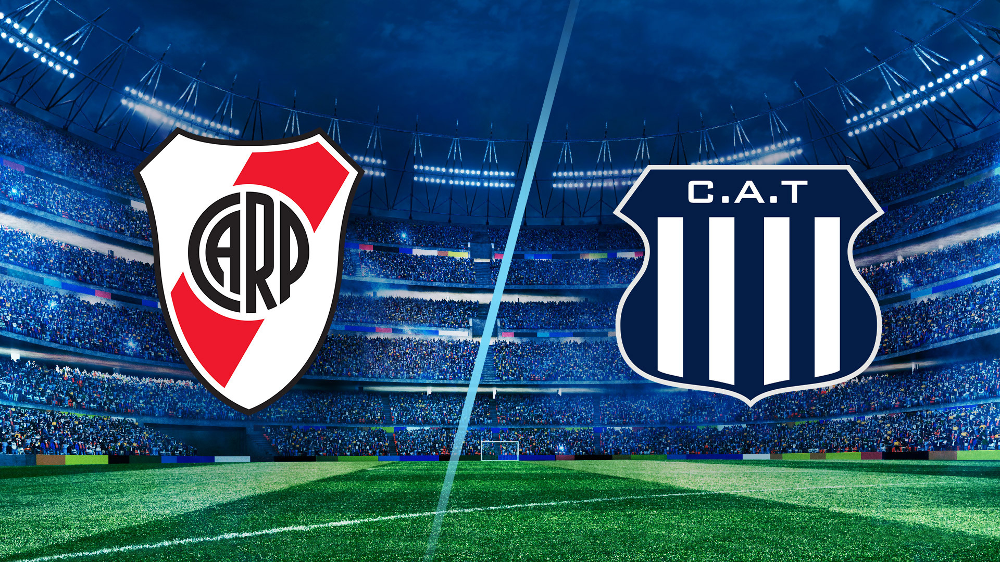
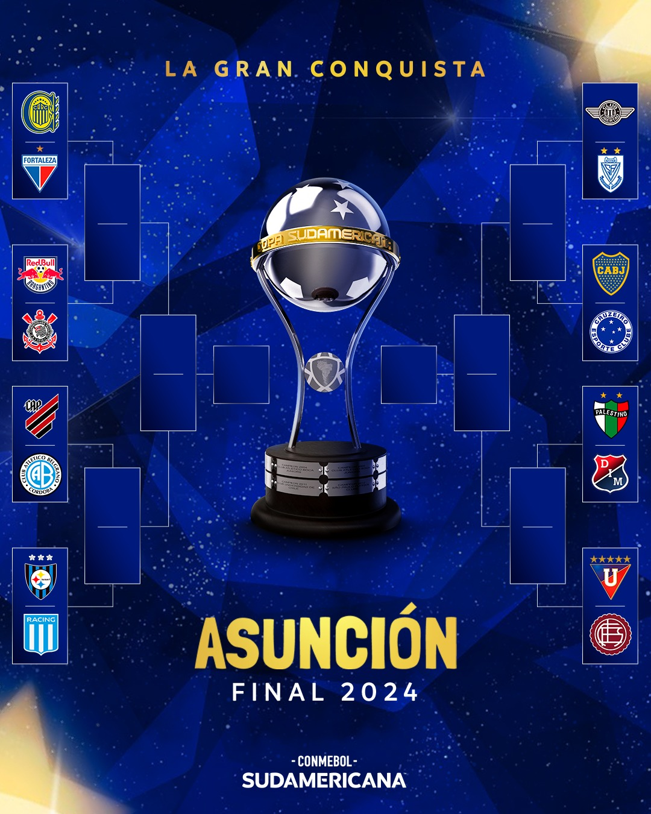
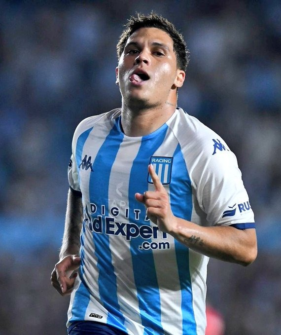
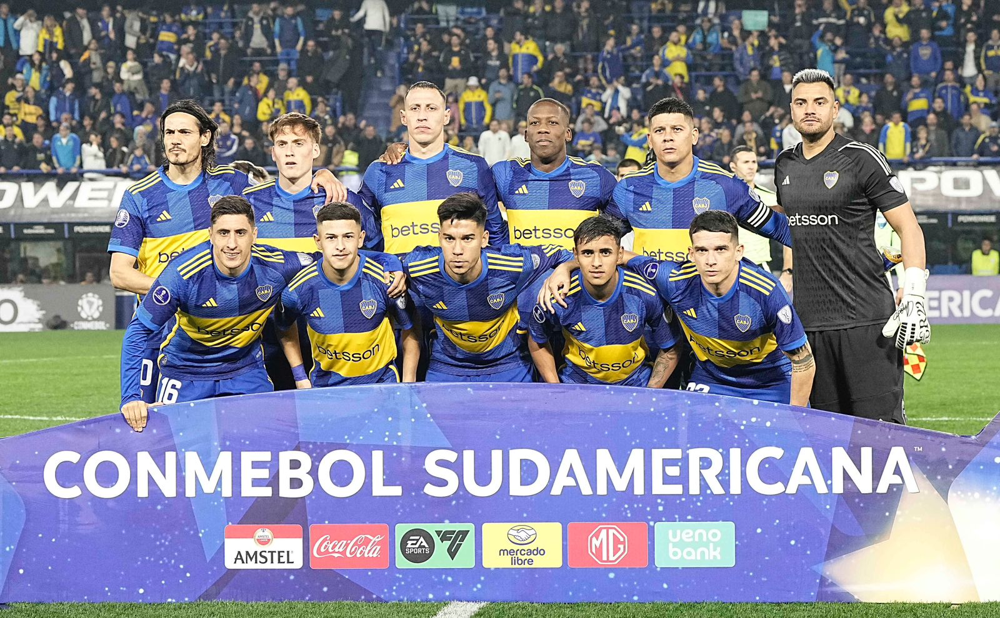
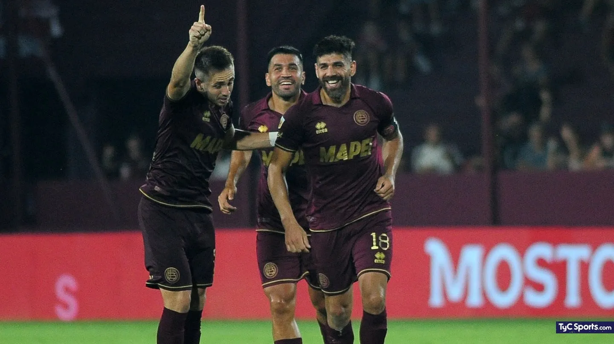

Noticias de los Clubes Argentinos que participan en copas internacionales
Las llaves de la Copa Libertadores:
Cuándo juega San Lorenzo vs. Atlético Mineiro, por los octavos de final de la Copa Libertadores (03/06/2024)
San Lorenzo jugará vs. Atlético Mineiro en los octavos de final de la Copa Libertadores 2024. Después de la Copa América, el Ciclón -que pasó como segundo del Grupo F- enfrentará al equipo de Gabriel Milito -primero del Grupo G- en busca de meterse entre los ocho mejores del continente.
River y Talleres jugarán con visitantes por la Copa Libertadores (05/08/2024)
River y Talleres de Córdoba finalmente jugarán la llave de octavos de la Copa Libertadores con la presencia de hinchas visitantes, tanto en la ida en el Mario Alberto Kempes como en la revancha que se disputará en el Monumental.
Las llaves de la Copa Sudamericana
Rosario Central vs. Fortaleza, en octavos de final de Copa Sudamericana: día, horario y cómo se define la serie
El conjunto argentino venció a Internacional de Porto Alegre y enfrentará a otro conjunto brasilero en la próxima instancia del certamen continental.
Confirmaron fecha y hora para Belgrano vs Atlético Paranaense en la Copa Sudamericana (26/07/2024)

Belgrano tiene todo definido para el próximo compromiso en la Copa Sudamericana. Después de conocer que Atlético Paranaense será el rival, ahora se confirmaron las fechas y horario de los choques.
Racing vs. Huachipato: Cuándo juegan por los octavos de final de la Sudamericana 2024 (26/07/2024)
Después de ser uno de los mejores equipos de la fase de grupos, Racing retoma su paso en la Sudamericana 2024. Su rival en octavos de final será Huachipato, quien superó la instancia de Playoff para verse las caras con la Academia de Gustavo Costas.
Un cruce picante: la larga historia entre Boca y Cruzeiro
El Xeneize volverá a enfrentarse a los brasileños en los octavos de la Sudamericana.
Lanús vs. Liga de Quito, en octavos de final de la Copa Sudamericana (25/07/2024)
Lanús y Liga de Quito se enfrentarán en uno de los manos a manos más parejos de los octavos de final de la Copa Sudamericana, Justamente entre dos excampeones del certamen.